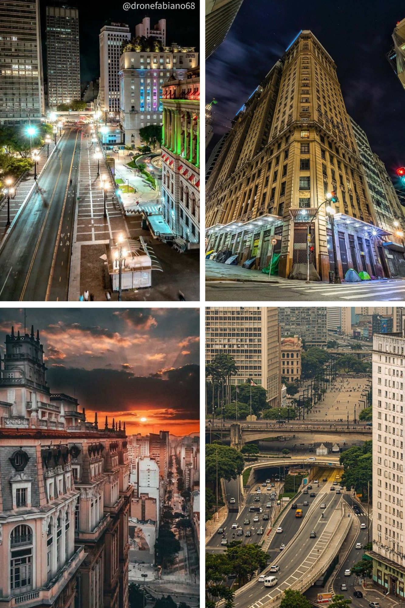

Onde Visitar
São Paulo Alternativa
Explore os bairros da Vila Olímpia, Vila Madalena, Bixiga e Pinheiros em um tour alternativo pelos melhores pontos de arte urbana e cultura local.
Sabores de Sampa
Um passeio gastronômico pela diversidade culinária de São Paulo, incluindo botecos tradicionais e mercados icônicos.
São Paulo Noturna
Experiência noturna pelos bares, rooftops e baladas exclusivas da cidade, com uma visão sobre a vida boêmia paulistana.
Tour Histórias Ocultas
Explore os mistérios e lendas urbanas de São Paulo, conhecendo a história por trás de locais como o Edifício Martinelli e o Viaduto do Chá.
Bike Tour Verde
Pedale pelos parques e áreas verdes da cidade, como o Parque Ibirapuera, em um passeio ecológico e sustentável.
Grafite & Arte Urbana

Conheça o grafite e a arte de rua de São Paulo, passando por murais icônicos no Beco do Batman e Minhocão.
Agenda Cultural e Eventos
- Exposição no MASP - 15 de novembro
- Show de Jazz no Centro Cultural - 20 de novembro
- Feira de Antiguidades - 25 de novembro
Depoimentos
“São Paulo é incrível! Adorei o roteiro gastronômico.” – Mariana R.
“A arte urbana da cidade é única. Recomendo o Beco do Batman!” – Pedro S.